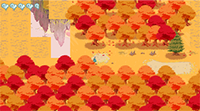

Inoh's est un Zelda-Like aux inspirations comme Le château dans le ciel ou encore Avatar le dernier maitre
de l’air. Ce jeu reprend les mécaniques de base des premiers Zelda tout en les modernisant pour former une
expérience riche et nerveuse. Devant allier réflexion et maîtrise de ses pouvoirs, le joueur parcourt le monde d’île
en île à la recherche d’informations sur les déesses afin de sauver son village du terrible culte de Térenos.
Ce jeu a été fait en 5 mois durant la période de confinement française de 2020 par une équipe de 6 étudiants. J’ai été en charge de toute la programmation
du jeu ainsi qu’une grande partie de l’intégration graphique.

Compétences acquises :
Durant ce projet, j’ai appris les bases de la sérialisation en c# et j’ai pu améliorer mes compétences
en Gameplay Programming.
De plus j’ai dû aussi m'occuper de la communication avec les artistes afin de pouvoir intégrer les différents assets du jeu.